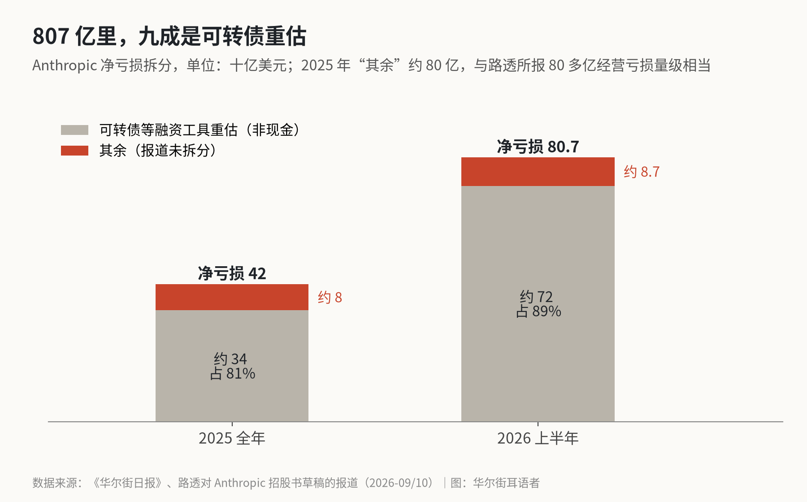
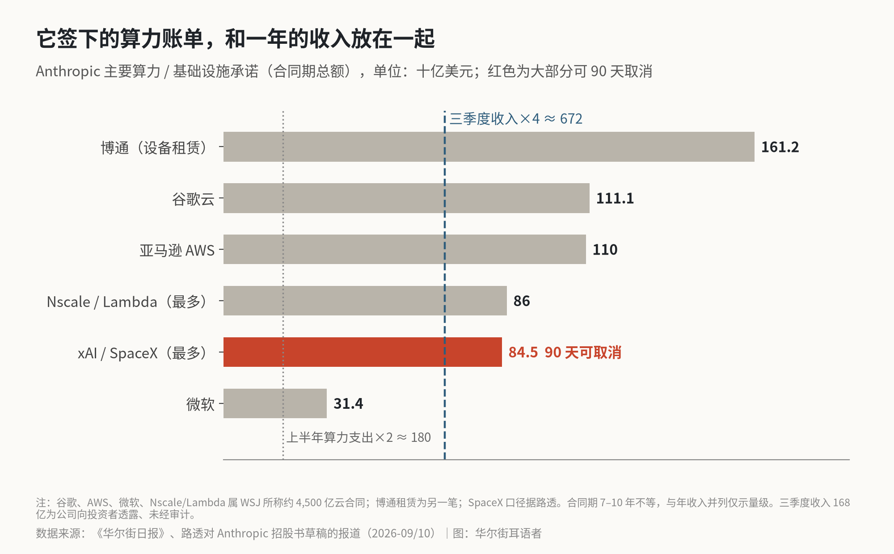

Anthropic 807 亿亏损里有多少是会计调整？
拆开看，约 720 亿是可转债重新估值的账面损失，不花现金；我更在意的是另一组数：4,500 亿美元、大多不能取消的算力合同，摊到每年跟它的收入差不多大。
答案是大约 720 亿，接近九成。这一块我愿意直接划掉：它来自 Anthropic 为融资发的可转换债券，公司估值涨了，这些债按公允价值重新算，账面上就记成亏损，一分现金都没出去。可划完之后，我反而松不下这口气。据《华尔街日报》看到的招股书草稿，Anthropic 签了约 4,500 亿美元的云算力合同，期限 7 到 10 年，大部分不能取消。按 10 年摊是每年 450 亿，按 7 年摊是每年 640 亿；它三季度的收入是 168 亿，乘以 4 也就 670 亿出头。807 亿是个吓人的标题，这张账单才是 Anthropic 真正的成本结构。账单里最灵活、也最不牢靠的那一块，偏偏是从 SpaceX 租的算力。
720 亿是怎么来的
WSJ 周二报道的这份草稿里，Anthropic 上半年收入 163 亿美元，去年同期只有 11 亿；净亏损 807 亿，去年同期 130 亿。807 亿里，约 720 亿是和可转债等融资工具估值变化有关的会计费用。路透说得更直白：这是那些将来能换成 Anthropic 股票的债券“估计价值上升”带来的，和经营花掉的现金无关。
这个逻辑第一次看有点反直觉。可转债持有人手里拿的，本质上是一张将来按约定条件换股的权利。公司越值钱，这张权利越值钱，对公司来说就是一笔更大的负债，差额记成损失。路透说现在有投资者在掂量 1.5 万亿美元左右的估值，之前的说法是 1.8 万亿到 2 万亿。估值在这个量级上跳，这一行跟着跳几百亿，一点不奇怪。公司干得越好，这里亏得越多。
去年也是这个套路。2025 年 Anthropic 净亏约 420 亿，其中约 340 亿是同类会计费用，剔掉之后经营亏损 80 多亿，收入 46 亿。
不过我不同意把它当成“假钱”。它不花现金，却是实打实的稀释。这 720 亿代表的价值，最后是以股份的形式归了早期的债权人，买 IPO 的新股东替它买单。看估值时这部分得算进总股本，光在利润表上剔掉，账就算偏了。
上市以后这一项会怎样，现在还说不准。一般的做法是可转债在 IPO 时转成股票，重估跟着结束，这种动辄几百亿的会计费用不会年年都有。Anthropic 的具体条款，得等公开版招股书出来再看。
剩下约 87 亿是什么，目前的报道没有拆开。X 上有人说它的经营亏损在扩大，我没找到上半年 GAAP 经营亏损的具体数字，没法确认。能查到的是另一个方向：FT 报道，Anthropic 二季度有望连续第二个季度实现调整后经营盈利，而它 5 月融资材料里给的调整口径不含股权激励。两头一对，我的理解是，剔掉股权激励它大概在赚钱，算上就难说了。

收入在飞，账单飞得更早
收入增长没什么可挑的。一季度 47.3 亿，二季度 115 亿。路透说，Anthropic 10 月 14 日告诉潜在投资者，三季度收入 168 亿，环比又涨了 45%，调整后盈利。这些数没审计，方向不用争。
成本也在追。上半年它在算力和基础设施上花了近 90 亿，去年同期 23 亿，2025 年全年才 73.3 亿。
真正让我停下来的是合同。按 WSJ 的报道，那约 4,500 亿的云合同里，谷歌 1,111 亿、亚马逊 AWS 1,100 亿、微软 314 亿，另有最多 860 亿是 Nscale 和 Lambda 提供的英伟达算力。合同之外，还有一笔超过 1,600 亿、通过博通租谷歌芯片的设备租赁；正在谈的新合同，可能再加 1,500 亿。公司自己的口风是，未来几年算力上可能花到 7,500 亿。路透 9 月看到的另一版口径是十年至少 5,180 亿、六家合作方，约八成“不可取消或不管用不用都得付”。招股书里有一句很能说明问题：“如果我们的实际支出不足，我们必须向谷歌补足差额。”
几个口径的范围不完全一样，我不去硬凑。就拿 4,500 亿这个最保守的数，摊下来每年 450 亿到 640 亿。上半年的算力支出折成全年，是 180 亿左右。从 180 亿走到四五百亿，这个台阶它几年内必须迈上去，基本没有回头路。
收入跟得上吗？三季度年化 670 亿出头，账面上刚好够付。可这是在环比 45% 的增速下算出来的。增速慢下来一点，这张固定账单就从“刚好覆盖”变成“压在头上”。客户也偏集中。WSJ 说上半年约 20% 的收入来自两家客户；路透 9 月的报道里，2025 年这个比例接近四分之一。收入的大头系在少数几个大客户身上，成本却是十年期的硬合同，两边的期限对不上。

SpaceX 那份合同
这堆合同里，SpaceX 是个例外。SpaceX 的上市文件写着，Anthropic 每月付 12.5 亿美元租 Colossus 和 Colossus II，到 2029 年 5 月。路透看到的 Anthropic 招股书说，和马斯克 xAI 的协议最多可能花到 845 亿美元，期限到 2029 年，大部分可以提前 90 天通知取消。
这一条两面都能看。说来也怪，Claude 和 Grok 是正面竞争的模型，Anthropic 却在用 Grok 东家的机房。对 Anthropic，它是整张成本表里唯一能快速撤的部分，算力价格要是掉了，可以不续。反过来，SpaceX 也能收回。马斯克刚在 SpaceX 电话会上说，目标是一半算力自用、一半出租，Grok 要训练，Grok Bot 要跑推理。Anthropic 自己在招股书里也写了，如果来自第三方的算力被“削减、重新定价或终止”，业务会受到不利影响。
一个月 12.5 亿，一个季度就是 37.5 亿。上半年 Anthropic 的算力支出平均下来每季度约 45 亿。SpaceX 这一项单拎出来，已经快赶上它上半年一个季度的全部算力开销了。
X 上还流传一个说法，说招股书承认“约三分之一的运行率收入对应的算力依赖 SpaceX”。我没找到原文，也没找到可靠报道，这里先不用。
807 亿之外，真正的成本是算力账单
807 亿这个数可以不看了，“大部分是会计调整”这句话也别拿来安慰自己。前者是估值上涨的副产品，后者容易让人忘了稀释，也忘了真正的成本在哪儿。
Anthropic 现在更像一家先把未来十年的房租和电费签下来的公司。收入得一直高速长，才撑得住几乎全是固定的算力账单，而账单里唯一能灵活调的那块，握在竞争对手手里。
它预计 11 月上市。上市文件里有两个数分量最重：算力支出占收入的比例往哪走，还有 SpaceX 那份合同实际执行了多少。三季度 168 亿之后增速要是还撑得住，4,500 亿就只是一张很大的订单；增速一旦明显放慢，这张订单很快会变成问题。
X 上怎么看
结论 · 分歧：看多 2 · 看空 4 · 中性/分歧 4
▲ 看多2 位
▼ 看空4 位
招股书里 Anthropic 担心约 1/3 运行率收入对应的 SpaceX 算力随时可能被收回，自认在关键算力上“处于被动依附”。
● 分歧或中性4 位
转述 WSJ 看到的招股书草稿：上半年收入 163 亿美元，净亏 807 亿主要由会计费用造成，算力支出近 90 亿，未来 7–10 年云承诺约 4,500 亿。
观点为 X 用户当日公开帖子的中文摘要，忠于原文但有删减；标「未核实」的为预测、个人推测或单一来源说法。立场为人工判断。
数据来源
- https://www.wsj.com/tech/ai/anthropic-revenue-growth-ipo-accaf0f1
- https://www.investing.com/news/stock-market-news/anthropic-revenue-hits-163-billion-as-preliminary-s1-outlines-ipo-risks--wsj-4960928
- https://money.usnews.com/investing/news/articles/2026-10-20/anthropic-recorded-net-loss-of-over-80-billion-in-first-half-of-this-year-wsj-reports
- https://www.streetinsider.com/Reuters/Anthropic+logged+net+loss+of+over+%2480+billion+in+first+half+of+2026/27210198.html
- https://qz.com/anthropic-net-loss-first-half-ipo-prospectus-102126
- https://www.cnbc.com/2026/09/28/anthropics-ipo-prospectus-shows-sweeping-ai-vision-surging-costs-reuters.html
- https://www.streetinsider.com/Reuters/Anthropics+%24518+billion+AI+buildout+hinges+largely+on+deals+that+cannot+be+canceled%2C+filing+shows/27116899.html
- https://techcrunch.com/2026/09/28/anthropics-prospectus-details-losses-growth-and-yes-a-warning-that-its-ai-could-end-humanity/
- https://www.reuters.com/commentary/breakingviews/anthropics-turbo-growth-is-only-half-ai-story-2026-05-27/
- https://fortune.com/2026/09/29/anthropic-ipo-s-1-prospectus-income-statement/
- https://fortune.com/2026/10/21/anthropic-s-1-leak-income-statement-ipo/
- https://investinglive.com/stocks/anthropic-ipo-draft-shows-nearly-15-fold-revenue-jump-and-600-billion-in-compute-deals/
- https://www.sec.gov/Archives/edgar/data/1181412/000162828026039278/filename1.htm
- https://www.wired.com/story/spacex-ipo-anthropic-compute-finances-risks/
- https://stockanalysis.com/stocks/spcx/transcripts/723936-q3-2026/
- https://x.com/qinbafrank/status/2112705447937659373
- https://x.com/bboczeng/status/2112718897258680325
- https://x.com/Kalshi/status/2112642510774215014